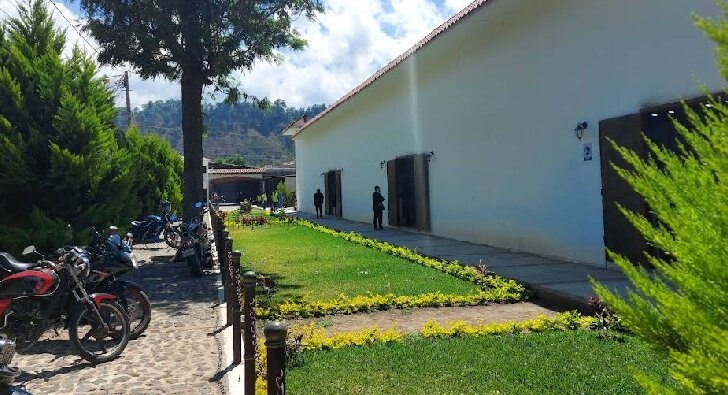

La Pastora Débora de García explica que, al venir a Cristo, la conciencia queda en “neutro” y puede evolucionar o involucionar según el conocimiento de la Palabra de Dios. Al final presenta un cuadro con seis niveles de evolución y cinco de involución.
En resumen
- Al venir a Cristo, la conciencia queda en “neutro”, lista para ser formada por la Palabra y por el Espíritu Santo.
- La conciencia puede evolucionar (neutra, buena, limpia, fuerte, irreprensible y perfecta) o involucionar (mala, débil, contaminada, corrupta y cauterizada).
- Lo que se oye y las conversaciones que se tienen forman la conciencia (1 Corintios 15:33, en la Biblia Peshita).
- Dios mira lo de adentro: no sirve un vaso limpio por fuera y sucio por dentro (Mateo 23:25-26).
- La conciencia perfecta se alcanza por el rociamiento de la sangre de Cristo (Hebreos 9:8-14).
La conciencia al venir a Cristo
La predicadora explica que, seamos cristianos o no, existe un acusador interno que provoca remordimiento en la persona inconversa. En los creyentes, dice, se espera que ese remordimiento sea arrepentimiento guiado por el Espíritu Santo y por la ley de Dios escrita en el corazón.
Afirma que, al venir a Cristo, la conciencia que la persona traía y su conocimiento de las cosas quedaron “en neutro”, listos para estrenarse. Esa neutralidad existe porque hay disposición de que el Señor enseñe: todo lo que se conocía hasta entonces se deja atrás y, de ahí en adelante, es Él quien enseña.
Según la predicadora, esa conciencia puede evolucionar si el creyente se compromete con la Escritura y con el redargüir del Espíritu Santo, o puede involucionar si no se trabaja en ese conocimiento.
La mala conciencia
Quien no trabaja en el conocimiento de lo que Dios dice y pide puede “descender” en su conciencia. La predicadora menciona Hebreos 10:22, donde se habla de la conciencia mala.
Lo ilustra con una anécdota sobre un grupo de pastores y su congregación que maltrataban a sus esposas. Aunque fueron instruidos sobre tratar a la mujer como vaso más frágil, prefirieron mantener su cultura y su mala conciencia antes que dejar de hacerlo.
Conocer lo bueno y lo malo
La predicadora define la mala conciencia como la de alguien que tiene información equivocada. Cita Isaías 5:20-21, sobre quienes a lo malo le dicen bueno y a lo bueno malo, y sobre los que son sabios en sus propios ojos.
Advierte del peligro de engañarse a uno mismo y de la importancia de permitir que el Espíritu Santo dicte lo que Dios quiere.
Las malas conversaciones
Menciona 1 Corintios 15:33 en la Biblia Peshita: las malas conversaciones corrompen las buenas conciencias. Enfatiza que la responsabilidad no es solo de lo que hablamos, sino también de lo que oímos: redes sociales, películas y amistades, porque eso forma la conciencia.
La involución y el caminar
Usa el Salmo 1:1-3 para explicar la involución: el hombre que anda en consejo de impíos, luego se detiene en camino de pecadores y termina sentado en silla de burladores. En cambio, quien medita en la Palabra es como un árbol plantado junto a corrientes de agua que da fruto a su tiempo.
La fe y la conciencia
La conciencia es transformada y evoluciona según lo que se sabe de la Biblia. La predicadora recuerda que la fe viene por el oír la Palabra, y reitera que una mala conciencia implica no tener el corazón limpio ante Dios.
El examen de la conciencia
Exhorta a examinarse a uno mismo (2 Corintios 13:5), comparándose con lo que pide la Palabra de Dios. Plantea la pregunta: ¿yo soy lo que pienso, o lo que pienso es lo que yo soy? Menciona Proverbios 23:7 y Mateo 12:33: el comportamiento y el fruto evidencian cómo está la conciencia.
La responsabilidad de la mente
La predicadora dice que Dios “sube la talla” en el nuevo pacto: del mandamiento de amar a Dios con el corazón, el alma y las fuerzas (Deuteronomio 6:5) a amarlo también con la mente (Marcos 12:30). Menciona Hebreos 8:10, donde Dios pone sus leyes en la mente y las escribe en el corazón.
Recuerda a Satanás, juzgado por lo que dijo en su corazón (Isaías 14:13), y que Dios juzgará lo secreto por Jesucristo (Romanos 2:16; Lucas 12:2).
El vaso limpio por dentro
Pregunta si a Dios le interesa más lo de afuera que lo de adentro. Usa la analogía de lavar platos: ¿de qué sirve venir con el vaso limpio por fuera y sucio por dentro? Cita Mateo 23:25-26, donde se denuncia a escribas y fariseos por limpiar lo de afuera mientras por dentro están llenos, y se ordena limpiar primero lo de adentro.
La buena conciencia y el bautismo
Según la predicadora, la buena conciencia se adquiere mediante el bautismo (1 Pedro 3:21). El bautismo no es para quitar la suciedad de la carne, sino para elevar a Dios una petición de buena conciencia.
La conciencia débil y la conciencia fuerte
La conciencia débil surge del creyente que no escudriña la Palabra (1 Corintios 8:4-7). Explica el caso de la carne sacrificada a ídolos: quien tiene conocimiento sabe que el ídolo nada es; quien tiene conciencia débil se contamina al comerla pensando en el ídolo. Con conciencia fuerte, en cambio, no le afecta.
La conciencia contaminada
La conciencia se contamina cuando se tiene un conocimiento débil o cuando no se tiene todo el contexto de una situación. Menciona que la falta de conocimiento destruye al pueblo de Dios (Oseas 4:6).
La conciencia irreprensible
Es aquella que se reprime en su libertad para que otro no peque (Hechos 24:16). La predicadora la ilustra con el ejemplo de Pablo, quien dijo que preferiría dejar de comer carne para no ser tropiezo a otros (1 Corintios 8:4-13). También cita 2 Timoteo 2:23-26: evitar contiendas, ser amable y tener mansedumbre para corregir.
La conciencia perfecta
Se alcanza por el rociamiento de la sangre de Cristo (Hebreos 9:8-14): los ritos antiguos no podían hacer perfecta la conciencia, pero la sangre de Cristo sí. Menciona 1 Pedro 1:2, donde fuimos elegidos para ser rociados con la sangre de Jesucristo. La presenta como el grado más alto.
Al final muestra un cuadro comparativo. Evolución de la conciencia: neutra, buena, limpia, fuerte, irreprensible y perfecta. Involución: mala, débil, contaminada, corrupta y cauterizada. Menciona 1 Timoteo 1:15-16 al hablar de la conciencia corrupta.
La lámina de la enseñanza
La iglesia publicó una lámina con el mismo tema, bajo el texto de Hebreos 9:14: “Cristo limpia nuestra conciencia para servir al Dios vivo”. En ella, la columna de evolución enumera buena conciencia (1 Pedro 3:21), limpia conciencia (Hebreos 9:14), conciencia fuerte (1 Corintios 8:4-8) y conciencia irreprensible (Hechos 24:16); la columna de involución enumera mala conciencia (Hebreos 10:22), débil conciencia (1 Corintios 8:7), conciencia contaminada (1 Corintios 8:7) y conciencia corrupta (Tito 1:15-16).
Versículos citados
- Hebreos 10:22 Conciencia mala, y acercarse a Dios con corazón sincero.
- Isaías 5:20-21 Los que a lo malo le dicen bueno y a lo bueno malo; los sabios en sus propios ojos.
- 1 Corintios 15:33 (Peshita) Las malas conversaciones corrompen las buenas conciencias.
- Salmo 1:1-3 El que anda en consejo de impíos, se detiene en camino de pecadores y se sienta en silla de burladores; el árbol plantado junto a corrientes de agua.
- 2 Corintios 13:5 Examinarse y probarse a uno mismo.
- Proverbios 23:7 Como es el pensamiento en el corazón, así es la persona.
- Mateo 12:33 Por el fruto se conoce el árbol.
- Deuteronomio 6:5 y Marcos 12:30 Amar a Dios con corazón, alma y fuerzas, y también con la mente.
- Hebreos 8:10 En el nuevo pacto, Dios pone sus leyes en la mente y las escribe en el corazón.
- Mateo 23:25-26 Limpiar primero lo de adentro del vaso.
- Isaías 14:13 Satanás, por lo que dijo en su corazón.
- Romanos 2:16 y Lucas 12:2 Dios juzgará lo secreto; nada oculto quedará sin descubrirse.
- 1 Pedro 3:21 El bautismo como petición a Dios de una buena conciencia.
- 1 Corintios 8:4-13 La carne sacrificada a ídolos: conciencia débil y conciencia fuerte.
- Oseas 4:6 El pueblo perece por falta de conocimiento.
- Hechos 24:16 La conciencia irreprensible.
- 2 Timoteo 2:23-26 Evitar contiendas; amabilidad y mansedumbre para corregir.
- Hebreos 9:8-14 La sangre de Cristo y la conciencia perfecta.
- 1 Pedro 1:2 Elegidos para ser rociados con la sangre de Jesucristo.
- 1 Timoteo 1:15-16 Mencionado al hablar de la conciencia corrupta.
Cierre de la reunión
Hacia el final, la predicadora invita a la congregación a ponerse de pie. Cuenta una anécdota sobre un cuñado japonés para ilustrar que la conciencia es inherente al ser humano, e invita a quienes quieran pasar al frente a pedir una conciencia neutra, limpia, fuerte, irreprensible y perfecta.
Guía una oración de entrega de la conciencia a Dios, pidiendo que no involucione, no se cauterice ni se corrompa, y entregando cualquier conocimiento equivocado. Sigue orando por conservar una conciencia irreprensible delante de Dios y de los hombres, y por la escritura de la ley de Dios en sus corazones y mentes. La congregación canta alabanzas y la pastora da gracias por la Palabra, hace un llamado a recibir al Señor Jesús o reconciliarse, y despide con bendición.
Este artículo resume lo expuesto en la enseñanza; no sustituye escucharla completa en el video de arriba.
Más enseñanzas
 Paz · 20 novGobernados por la PazAnciano José Carlos MéndezEl Anciano José Carlos Méndez enseña, a partir de Cantares 1:2, que pedirle al Señor “bésame” es pedirle “gobiérname”, y que quien se deja gobernar…
Paz · 20 novGobernados por la PazAnciano José Carlos MéndezEl Anciano José Carlos Méndez enseña, a partir de Cantares 1:2, que pedirle al Señor “bésame” es pedirle “gobiérname”, y que quien se deja gobernar… Tiempos finales · 17 novLa LuzPastor Rodrigo OrdóñezEl Pastor Rodrigo Ordóñez enseña que, mientras las tinieblas cubren la tierra en los tiempos finales, la iglesia está llamada a ser el contraste y a…
Tiempos finales · 17 novLa LuzPastor Rodrigo OrdóñezEl Pastor Rodrigo Ordóñez enseña que, mientras las tinieblas cubren la tierra en los tiempos finales, la iglesia está llamada a ser el contraste y a…
Oración · 15 novLa OraciónProfeta Hugo García«La Oración» se enseñó el domingo 15 de noviembre de 2026 bajo el pensamiento “Mientras Jesús oraba, el cielo se abrió” (Lucas 3:21), y la iglesia la…